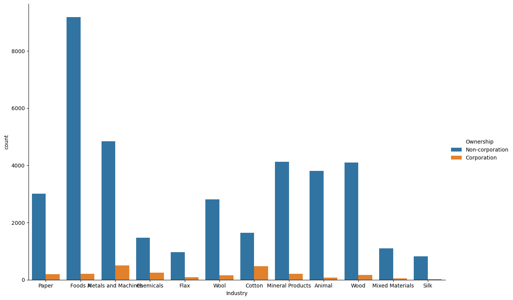
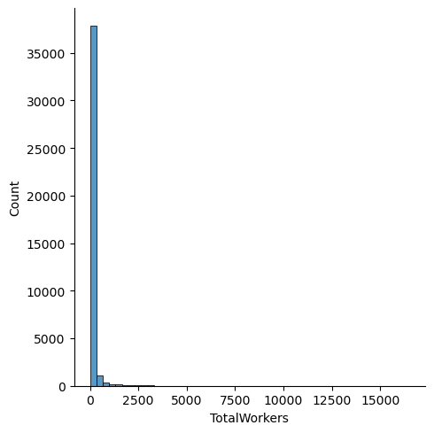

%load_ext autoreload
%autoreload 2The autoreload extension is already loaded. To reload it, use:
%reload_ext autoreloadThe source code for this project could be found here. We have a README.md file that outlines what our project want to achieve, and roughly how we are going to implement the models and analysis. We also have a separate .txt file that gives a dictionary of all the variable names and their actual meaning. Hence, we encourage the reader to also reference that .txt file to remember which variable means what.
Incorporation is the process by which a firm becomes a corporation. A corporation is a firm that is recognized as a separate legal entity independent of its owners. As it is a state’s decision to recognize a corporation as an entity that is a separate legal being, incorporation is a privilege granted by a state.
According to economic historian Ron Harris, a corporation exhibits four key features.
Transferrable shares: This signifies that the ownership of a corporation can be split into multiple shares. These shares can be raised, bought and sold freely. When a corporation is allowed to sell shares, it can raise capital at a rapid rate for projects that it wishes to partake in. However, by selling shares in its corporation, the original owners may risk losing control as any entity with a majority stake in the corporation can make executive decisions.
Separate legal personhood: In a legal sense, a corporation has a legal personality that is separate from its owners. This means that a corporation can legally perform various tasks a person can, such as owning property, entering into contracts and suing and being sued by other parties. It also means that the death of an owner, or a sudden change in ownership or control of the firm has no effect on its continued legal existence. It also means that corporations can be held accountable for its actions, irrespective of who owns or controls it.
Limited liability: limited liability can be viewed as an extension of the idea of separate legal personhood. This implies that an owner cannot be liable for more money than what they invested into the corportion. Hence, if a corporation has one owner who decides to invest 100 dollars, and corporation needs to pay 1000 dollars in fines while facing bankruptcy, the owner cannot be held liable for more than what they invested. The rest of the debt belongs to the corporation
Separation between the ownership and management of the firm: Fractional ownership of the firm allows for a specialized management independent of the majority ownership of the firm to emerge. This allows for managers that can be hired and fired based on merit.
Economists and legal scholars frequently debate about the effectiveness of corporations. Incorporation comes with several advantages and disadvantages. The advantages of incorporation- such as being able to raise capital rapidly due to transferrable shares and having relative stability due to its separate legal personhood- are easy to observe. Society at large could also benefit from firms sharing However, it can also have several disadvantages for its owners and society at large. The owners of a corporation can be forced out of control by a hostile takeover if another entity owns more than 50% of the issued shares. Corporations could also abuse the rights given to it by the state to engage in malpractice that harms workers and causes economic crises.
Since the development of corporations in the 16th century, the legal codes allowing them to exist have been adopted by nearly all countries. Most countries, rightly, treated the idea of corporations with both excitement and apprehension. This is certainly true for Imperial Russia in the late 19th century. Russia observed the rapid advancement of Western European states such as England, Holland and Germany as a security threat. It wanted to create a system, with its limited resources, that allows for the existence corporations, while also maintaining a high degree of regulation.
Hence emerged the “Concession System of Incorporation” in Russia. Under this system, incorporation was granted in a slow, tedious and expensive manner on a case-by-case basis. The high costs and logistical challenges posed a serious barrier towards firms wishing to incorporate. Hence, under these circumstances, only some firms would benefit from incorporation, and would choose to incorporate. In this project, we wish to study the characteristics of firms that would choose to incorporate in this context. Doing so can allow us to better understand the economy of early 20th century Russia, the adoption and development of corporations, and the fundamental nature of corporations.
Our work verifies and builds upon Professor Amanda Gregg’s work on corporations in Russia in “Factory Productivity and the Concession System of Incorporation in Late Imperial Russia, 1894–1908”
The potential users of our project includes economists studying the nature of different enterprise forms, legal scholars and scholars of Russian history. However, our project could also have a wide-ranging impacts on other individuals. Corporations are a key component of the world economy in the 21st century. Our understanding of how corporations operate and what affects their behaviour and incentives impacts how governments collect taxes and discipline firms in a socially optimal manner. This information could inform policy decisions related to corporate regulation and governance.
It is unlikely that technology that helps analyze and understand the characteristics of firms that incorporated in early 20th century Russia would directly harm anyone. We are unsure about how this plays into the politics of modern Russia. Our study could strengthen narratives about the heavy-handed nature of pre-soviet governance, and could be used to argue that Russia has experienced economic stagnation due to decades of regulation that stifles businesses. These narratives affect could perhaps be used to make arguments in favor of the current Russian oligarchy- however this argument does feel like a stretch. Our project could also be used to legitimize loose regulation oon corporations- which could benefit corporations at the expense of the society at large.
We are fascinated by the roles played by different enterprise forms in the global economy and the legal, political and economic institutions that impact these enterprise forms. We’re also interested in studying the economies of developing countries. By studying corporations in a historical context, we can learn how the legal, political and economic institutions of a country in a period impacted its economic development.
We hope that this research will help us better understand the historical development of corporations and the economic and social factors that influenced their growth can inform policymaking and regulation to promote more equitable, just, peaceful, and sustainable societies.
We get our data from the Imperial Russian Factory Database, 1894-1908, compiled by Professor Gregg. This dataset is a digitzation of the Russian factory censuses from 1894, 1900 and 1908. This data is at the factory level, and includes information about the size of the factory’s workforce, the total power of its equipment, its revenue, and whether the firm owning it incorporated or not. It also contains information about the location of the firm and the date of its incorporation.
We hope to use this data to examine the types of industries that would benefit most from incorporation.
First, let us import some libraries that will become useful down the road. Also, the following snippet will automatically reload the final_project_code.py file where we keep our functions.
%load_ext autoreload
%autoreload 2The autoreload extension is already loaded. To reload it, use:
%reload_ext autoreloadfrom matplotlib import pyplot as plt
import numpy as np
from sklearn.linear_model import LogisticRegression
from final_project_code import FinalProject
import pandas as pd
from sklearn.preprocessing import LabelEncoder
from itertools import combinations
from matplotlib.patches import Patch
import seaborn as sns
from mlxtend.plotting import plot_decision_regions
from sklearn.metrics import roc_curve
from sklearn.metrics import roc_auc_score
from sklearn.metrics import confusion_matrix
from sklearn.metrics import classification_reportLet us create an instance of the class we defined in final_project_code.py, and let us read in the entire data set.
# from sklearn.metrics.pairwise import rbf_kernel
FP = FinalProject()
df = pd.read_csv("./AG_Corp_Prod_DataBase.csv", low_memory=False)
Rvss = pd.read_csv("./AG_Corp_Prod_DataBase.csv", low_memory=False)Let us now observe some summary statistics about our dataset.
The following visualization demonstrates the number of corporations and non-corporations in our dataset:
corporation_percentage = (df['Form'].value_counts(normalize=True) * 100).loc[1]
sns.barplot(x=['Corporation', 'Non-corporation'], y=[corporation_percentage, 100 - corporation_percentage])<AxesSubplot:>As we can observe, we have significantly more factories owned by non-corporations than we do factories owned by corporations. This has the potential to impact our research methods. We will discuss this further later in the blog post. Let us also break this chart down by the type of industry.
df['Ownership'] = df['Form'].map({1: 'Corporation', 0: 'Non-corporation'})
g = sns.catplot(x='Industry', hue='Ownership', data=df, kind='count', height=8, aspect=1.5)
We can already initially observe that certain industries how a high proportion of factories owned by corporations compared to other industries. For example
First, let’s do some data visualization. We are interested in seeing which industry in Late Imperial Russia had high machine power (measured in horsepower) and have high number of workers. We also want to get a sense of the distribution of machine power and number of workers, and visualize them by industry. Hence, let’s focus on the picture below. We see that roughly, factory with more machine power tend to also have more workers, and most company cluster at the \(2000\) horse power level, and \(2500\) workers.
sns.jointplot(data=df, x="TotalWorkers", y = "TotalPower", hue="Industry")<seaborn.axisgrid.JointGrid at 0x7fd4d9be28e0>
Similarly, here’s another plot to visualize the unbalanced nature of the data set. Here, Form is the desired label that we want to predict. Form taking a value of \(1\) means that factory was incorporated, i.e., it was owned by a incorporated firm. If Form take the value of \(0\), then that factory was not incorporated. In the next plot, instead of TotalPower, which stands for Total amount of horse power and TotalWorkers, which stands for total number of workers, we use logPowerperWorker and logRevperWorker as our y-axis and our x-axis. logPowerperWorker is obtained by taking the log of \(\frac{Power}{Worker}\), and logRevperWorker is log of \(\frac{Revenue}{Worker}\). And the hue is whether the factory is encorporated or not. Again, we see that the orange dots, which corresponds to \(1\), which corresponds to encorporated, is a very small percentage of all the factories. Most factories are not encorporated. Also, we observe that the data points follows a bell-shaped distribution on the two dimensions.
sns.jointplot(data=df, x="logRevperWorker", y="logPowerperWorker", hue = "Form")<seaborn.axisgrid.JointGrid at 0x7faf28213c40>
We download the replication data set and put it in the same directory as our project. After we read in the data, we notice that there are \(66\) columns, which means potentially we could have around \(60\) features for our machine learning model. However, let’s start small. Hence, we begin our analysis using a subset of the columns. Also, since in the original data set, there’s only a small percentage of factories that are incorporated, which is because of historical reasons in Late Imperial Russia during 1894 to 1908. For the purpose of this machine learning project, we artificially select a subset of the whole data set so that we have equal number of factories owned by incorporated firms and not incorporated firms alike.
We start our analysis by using logistic regression to predict what kind of firms in late Imperial Russia is more likely owned by a corporation. Since our data is not balanced, we use several different approach to this problem and try them one at a time. Luckily for us, classification problem with unbalanced data labels is quite common, so we have many approaches at our disposal.
not_incorporated = df.loc[df['Form']==0]
print(f"data set dimension of not incorporated: {not_incorporated.shape}")
incorporated = df.loc[df['Form']==1]
print(f"data set dimension of incorporated: {incorporated.shape}")data set dimension of not incorporated: (37895, 66)
data set dimension of incorporated: (2393, 66)Let us first get out definitions straight. Unbalanced data refers to those datasets where the target label has an uneven distribution of observations, First, we try to randomly sample the majority data set, which in this case, is when the label equals unincorporated. Then we keep all the data entries of the minority data set, and add in the randomly sampled extract of the majority data set with size equal to the minority data set. Then we perform logistic regression on this new data set. The good news is that our new data set is balanced, and the bad news is that we loose a lot of information by discarding many data entries in the majority data set.
result = FP.create_balanced_data(df)
train, validate, test = FP.split_data(result)
df_train, X_train, y_train = FP.prepare_data(train)
df_validate, X_validate, y_validate= FP.prepare_data(validate)
df_test, X_test, y_test = FP.prepare_data(test)df incorporated have 2393 many rows
after balancing, df not incorporated have 2393 many rowsresult["Form"].mean()0.5We could also create a under-sampling of the data set where though discarding data points of the majority data set, we achieve a balanced data set, albeit using a small subset of the full data set. Let’s store this balanced data set in the variable called result. We will mainly use the unbalanced full data set, but result data set is quite useful for testing and experimenting during our investigation.
cols = ['logWorkers', 'logPower']
# only run once, convert to numpy
X_train, y_train = FP.make_ready_for_regression(X_train, y_train, cols)
X_validate, y_validate= FP.make_ready_for_regression(X_validate, y_validate, cols)
X_test, y_test= FP.make_ready_for_regression(X_test, y_test, cols)Let us try the Logistic regression using Newton_Raphson method that we implemented from scratch on this balanced data set. We see that it converged rather quickly, and our score is high for all three groups: training, testing, validation.
from newton_raphson import Newton_Raphson
NR = Newton_Raphson()
NR.regress(y = y_train, X = X_train, max_iters = 1e3, tol=1e-15, converged=False)learning rate is: 0.5
Regularization is: True/home/xianzhiwang/ml0451/ml-0451-final-proj/posts/final-blog-post/newton_raphson.py:35: RuntimeWarning: overflow encountered in exp
return 1/(1+np.exp(-x))number of iteration: 10
beta: [[-949.3769919 ]
[-491.51336087]
[-514.56704713]]
number of iteration: 20
beta: [[ 616.1139379 ]
[ -77.70969872]
[-1728.53996285]]
number of iteration: 30
beta: [[ 249.78344405]
[ 8.25635669]
[-1099.30023336]]
number of iteration: 40
beta: [[ 109.88147514]
[ 3.71503689]
[-483.75986262]]
number of iteration: 50
beta: [[ 1.13087712]
[ 0.09177811]
[-4.96515977]]
number of iteration: 60
beta: [[ 0.97942233]
[ 0.109256 ]
[-4.31855225]]
number of iteration: 70
beta: [[ 0.97926744]
[ 0.10927011]
[-4.31788045]]
number of iteration: 80
beta: [[ 0.97926724]
[ 0.10927013]
[-4.31787959]]
number of iteration: 90
beta: [[ 0.97926724]
[ 0.10927013]
[-4.31787959]]
number of iteration: 100
beta: [[ 0.97926724]
[ 0.10927013]
[-4.31787959]]
Converged with 101 iterations
The beta we end up with is: [[ 0.97926724]
[ 0.10927013]
[-4.31787959]]NR.big_plot(X_train, y_train, X_validate, y_validate, X_test, y_test, 18, 6, "Log Worker", "Log Machine Power")The pictures looks good! The horizontal axis is log of total number of factory workers, and the vertical axis is log of total machine power measured in horse power. We see that factories with more workers and more machine power (on a log scale) are much more likely to incorporate. Since this is log scale, we deduce that factories with significantly more worker and more power tend to incorporate.
# compression_opts = dict(method='zip', archive_name='artificially_balanced_Rvssian_Factory.csv')
# result.to_csv('artificially_balanced_Rvssian_Factory.zip', index = False, compression=compression_opts)sns.lmplot(data=df_train, x="TotalWorkers", y = "TotalPower", hue="Form")<seaborn.axisgrid.FacetGrid at 0x7fe8519d4cd0>
We see that most factories have around \(1000\) to \(2000\) workers, and they have around \(0\) machine power to \(2000\) machine power, measured in horse power. There’s also a rough linear trend between total power and total worker, which makes sense. Factories with more power tend to have more workers, and vice versa.
sns.lmplot(data=df_train, x="PowerperWorker", y = "RevperWorker", hue="Form")<seaborn.axisgrid.FacetGrid at 0x7fe852c4afd0>
Here, we also see that there is a linear trend between Power per worker and Revenue per worker. It seems that factories that are not incorpored (those with Form == 0) tend to have more power per worker given the same revenue per worker, compared to their incorporated counterparts.
Whether to incorporate or not is an interesting question for factories and firms in late Imperial Russia. There were many factors that might affect a firm’s decision to incorporate or not, including the overall size of the factory, which could be seen in features such as total machine power of the factory and the total number of workers in a factory. Other factors such as the geographical location of the factory (i.e. which region it was located in) could also play a role. Since the decision to incorporate could be affected by many features, we see that some feature engineering could be beneficial for our analysis.
In the basic toolbox of an economist, one is unlikely to find methods of feature engineering, since we believe that economists would rather choose the regressors (features) themselves, becuase regressors are often central to the economic questoin and analysis. However, in this project, we actually going to have a systematic way written in code to select the features, according to which combination of features gives the highest score.
result = FP.create_balanced_data(df)
train, validate, test = FP.split_data(result)
df_train, X_train, y_train = FP.prepare_data(train)
df_validate, X_validate, y_validate= FP.prepare_data(validate)
df_test, X_test, y_test = FP.prepare_data(test)df incorporated have 2393 many rows
after balancing, df not incorporated have 2393 many rowsX_train, RegionCoded = FP.encode_features(X_train, "Region")
X_train['RegionCoded'] = RegionCoded
X_test, RegionCoded = FP.encode_features(X_test, "Region")
X_test['RegionCoded'] = RegionCoded
X_validate, RegionCoded = FP.encode_features(X_validate, "Region")
X_validate['RegionCoded'] = RegionCodedWe encode Region, which contains strings denoting the region of the factory in question, into numbers.
X_train, IndustryCoded = FP.encode_features(X_train, "Industry")
X_train["IndustryCoded"] = IndustryCoded
X_train = X_train.fillna(0)
# X_train.head(10)We also encode Industry into numbers, so we could run regression on it.
X_train, IndustryFactorCoded = FP.encode_features(X_train, 'IndustryFactor')
X_train["IndustryFactorCoded"] = IndustryFactorCodedNow, we try all feature combinations and select the one with the highest score according to logistic regression.
FP1 = FinalProject()
all_qual_cols = ['RegionCoded', 'IndustryCoded', "IndustryFactorCoded"]
all_quant_cols = [
'Province', 'OntheSide', 'Age', 'TaxedActivity',
'YEAR', 'SubindustryCode', 'STCAP', 'Revenue',
'TotalWorkers', 'TotalPower', 'GrandTotalWorkers', 'RevperWorker',
'PowerperWorker', 'RevperGrandWorker', 'PowerperGrandWorker',
'logRevperWorker', 'logPowerperWorker', 'logRevperGrandWorker',
'logPowerperGrandWorker', 'logRev', 'logWorkers', 'logPower',
'RegIndGroup', 'RegIndYearGroup', 'ProvIndGroup', 'ProvIndYearGroup',
'IndYearGroup', 'ProvinceFactor', 'YearFactor',
'AKTS', 'PAI', 'factory_id', 'FormNextYear', 'FormNextNextYear',
'FactoryisCorpin1894', 'FormNextYearin1894', 'FactoryisCorpin1900',
'FormNextYearin1900', 'FactoryisCorpin1908', 'NEWDEV', 'SHARES',
'STPRICE', 'BONDS', 'Silk', 'Flax', 'Animal', 'Wool', 'Cotton',
'MixedMaterials', 'Wood', 'Paper', 'MetalsandMachines', 'Foods',
'Chemical', 'Mineral']
y_train = y_train.reset_index(drop=True)
FP1.feature_combo(all_qual_cols, all_quant_cols, X_train, y_train) /home/xianzhiwang/miniforge3/envs/ml-0451/lib/python3.9/site-packages/sklearn/linear_model/_logistic.py:458: ConvergenceWarning: lbfgs failed to converge (status=1):
STOP: TOTAL NO. of ITERATIONS REACHED LIMIT.
Increase the number of iterations (max_iter) or scale the data as shown in:
https://scikit-learn.org/stable/modules/preprocessing.html
Please also refer to the documentation for alternative solver options:
https://scikit-learn.org/stable/modules/linear_model.html#logistic-regression
n_iter_i = _check_optimize_result(We see that it took a very long time to run! Now, let’s print out the column conbination with the highest score!
max(FP1.feature_score_pair, key=FP1.feature_score_pair.get)('RegionCoded', 'FactoryisCorpin1900', 'NEWDEV')The highest scoring combination is “RegionCoded”, “FactoryisCorpin1900”, “NEWDEV”, which together gives a logistic regression score of \(0.993\).
Another combination that we also considered during the experimenting phase is RegionCoded, RevperGrandWorker, logWorkers, which has a score of \(0.808\), which is not bad!
# test for max
max([-10, 5, 3], key=abs)
print(max(FP1.feature_score_pair.values()))
print(FP1.feature_score_pair[('RegionCoded', 'RevperGrandWorker', 'logWorkers')])
print(FP1.feature_score_pair[("RegionCoded", "FactoryisCorpin1900", "NEWDEV")])0.9947753396029259
0.8164402647161267
0.9947753396029259Now, let’s use the Newton Raphson method that we implemented from scratch on those three columns!
cols = ["RegionCoded", "FactoryisCorpin1900", "NEWDEV"]
# only run once, convert to numpy
X_train, y_train = FP.make_ready_for_regression(X_train, y_train, cols)
X_validate, y_validate= FP.make_ready_for_regression(X_validate, y_validate, cols)
X_test, y_test= FP.make_ready_for_regression(X_test, y_test, cols)from newton_raphson import Newton_Raphson
NR1 = Newton_Raphson()
NR1.regress(y = y_train, X = X_train, max_iters = 1e3, tol=1e-5, converged=False)/home/xianzhiwang/ml0451/ml-0451-final-proj/posts/final-blog-post/newton_raphson.py:36: RuntimeWarning: overflow encountered in exp
return 1/(1+np.exp(-x))number of iteration: 10
number of iteration: 20
number of iteration: 30
number of iteration: 40
number of iteration: 50
number of iteration: 60
number of iteration: 70
number of iteration: 80
number of iteration: 90
number of iteration: 100
number of iteration: 110
number of iteration: 120
number of iteration: 130
number of iteration: 140
number of iteration: 150
number of iteration: 160
number of iteration: 170
number of iteration: 180
number of iteration: 190
number of iteration: 200
number of iteration: 210
number of iteration: 220
number of iteration: 230
number of iteration: 240
number of iteration: 250
number of iteration: 260
number of iteration: 270
number of iteration: 280
number of iteration: 290
number of iteration: 300
number of iteration: 310
number of iteration: 320
number of iteration: 330
number of iteration: 340
number of iteration: 350
number of iteration: 360
number of iteration: 370
number of iteration: 380
number of iteration: 390
number of iteration: 400
number of iteration: 410
number of iteration: 420
number of iteration: 430
number of iteration: 440
number of iteration: 450
number of iteration: 460
number of iteration: 470
number of iteration: 480
number of iteration: 490
number of iteration: 500
number of iteration: 510
number of iteration: 520
number of iteration: 530
number of iteration: 540
number of iteration: 550
number of iteration: 560
number of iteration: 570
number of iteration: 580
number of iteration: 590
number of iteration: 600
number of iteration: 610
number of iteration: 620
number of iteration: 630
number of iteration: 640
number of iteration: 650
number of iteration: 660
number of iteration: 670
number of iteration: 680
number of iteration: 690
number of iteration: 700
number of iteration: 710
number of iteration: 720
number of iteration: 730
number of iteration: 740
number of iteration: 750
number of iteration: 760
number of iteration: 770
number of iteration: 780
number of iteration: 790
number of iteration: 800
number of iteration: 810
number of iteration: 820
number of iteration: 830
number of iteration: 840
number of iteration: 850
number of iteration: 860
number of iteration: 870
number of iteration: 880
number of iteration: 890
number of iteration: 900
number of iteration: 910
number of iteration: 920
number of iteration: 930
number of iteration: 940
number of iteration: 950
number of iteration: 960
number of iteration: 970
number of iteration: 980
number of iteration: 990
number of iteration: 1000print(f"validation score: {NR1.score(X_validate,y_validate)}")
print(f"testing score: {NR1.score(X_test,y_test)}")validation score: 0.9937304075235109
testing score: 0.9979123173277662Since we are using three features, we are not going to plot it this time. But our score is really high!
train, validate, test = FP.split_data(df)
df_train, X_train, y_train = FP.prepare_data(train)
df_validate, X_validate, y_validate= FP.prepare_data(validate)
df_test, X_test, y_test = FP.prepare_data(test)Can we predict which factory belongs to a incorporated company in Late Imerial Russia, during year 1894 and year 1908, by looking at other variables that are in the data?
Since previously we have artificially selected a subset of our entire Russian factory data set so that we have equal number of factories belonging to incorporated firms and not incorporated firms, we expect that our label has roughly \(50 \%\) of \(1\)’s and \(50 \%\) % of \(0\)’s.
y_train.mean()0.06044183352639417df_train.groupby(['Industry'])[['Form']].aggregate([np.mean, len]).round(3)| Form | ||
|---|---|---|
| mean | len | |
| Industry | ||
| Animal | 0.022 | 2367 |
| Chemicals | 0.140 | 1030 |
| Cotton | 0.226 | 1285 |
| Flax | 0.096 | 624 |
| Foods A | 0.025 | 5674 |
| Metals and Machines | 0.091 | 3162 |
| Mineral Products | 0.046 | 2567 |
| Mixed Materials | 0.043 | 675 |
| Paper | 0.062 | 1928 |
| Silk | 0.035 | 491 |
| Wood | 0.039 | 2556 |
| Wool | 0.056 | 1813 |
Hence, it seems that Food industry in Late Imperial Russia had a low incorporation rate, which is around \(28.3 \%\). On the other hand, the Cotton industry had a relatively high incorporation rate, around \(81.4 \%\).
df_train.groupby(['Industry'])[['TotalPower']].aggregate([np.mean, len]).round(3)| TotalPower | ||
|---|---|---|
| mean | len | |
| Industry | ||
| Animal | 35.943 | 216 |
| Chemicals | 239.574 | 185 |
| Cotton | 1088.862 | 345 |
| Flax | 483.345 | 93 |
| Foods A | 72.742 | 456 |
| Metals and Machines | 321.692 | 466 |
| Mineral Products | 91.953 | 266 |
| Mixed Materials | 81.920 | 73 |
| Paper | 199.061 | 247 |
| Silk | 50.485 | 51 |
| Wood | 62.274 | 286 |
| Wool | 171.922 | 187 |
We see that Cotton industry has the highest mean total power, and Silk industry has the lowest mean total power. We might predict that industry with a higher need for capital might choose to incorporate. ### After doing feature engineering, we perform a standard regression analysis using some other columns, since we are Economists at heart. We prefer picking those regressors by ourselves… However, we only want to make 2D plots with two features, so let us only use 2 features this time. We plan to go with Revenue per total worker and log of total worker, which are RevperGrandWorker, and logWorkers. ### Running some logistic regressions and plotting ROC curves We start with the standard procedure in Econometrics, which is running regressions. We first perform some regression analysis that is close in spirit to the published paper where this replication data set is coming from, and use ROC curve and confusion matrix to assess our model performance. First, let’s get our definition straight.
True Positive Rate = True Positives / (True Positives + False Negatives)False Positive Rate = False Positives / (False Positives + True Negatives)The ROC curve is especially useful when we want to compare directly the curve of several different models. Also, AUC, which stands for the area under the curve can be used to measure how good a model is.
important_cols = ['RegionCoded', 'RevperGrandWorker', 'logWorkers']
high_scoring_cols = ["RegionCoded", "FactoryisCorpin1900", "NEWDEV"]
# X_train = X_train.drop(["Industry"], axis=1)
# X_train = X_train.drop(["Region"], axis=1)
# X_train.drop(["FoundingYear", "OntheSide", "TaxedActivity", "PSZLastYear", "PSZ1908"], axis=1)
X_train = X_train.fillna(0)
y_train.reset_index(drop=True)
# cols = ["FactoryisCorpin1900", "NEWDEV"]
cols = ['RevperGrandWorker', 'logWorkers']
# fit a model
LR = LogisticRegression(solver="newton-cg") # Newton's Method
LR.fit(X_train[cols], y_train)
LR.score(X_train[cols], y_train)0.9472943902035413# ROC curve, receiver operating characteristic
# TPR true positive rate
# FPR false positive rate
# predict the probability
probability = LR.predict_proba(X_test[cols])# get the probabilities for the positive outcome
proba_positive = probability[:,1]# get a no-skill prediction that always predict the majority class
proba_no_skill = [0 for _ in range(len(y_test))]# compute the scores
auc_no_skill = roc_auc_score(y_test, proba_no_skill)
auc_LR = roc_auc_score(y_test, proba_positive)
print(f"Always predict zero, which is not incorporate. ROC AUC = {auc_no_skill}")
print(f"Use Logistic Regression. ROC AUC = {auc_LR}")
# fpr, tpr, thresholds = roc_curve(y_train, scores, pos_label=2)Always predict zero, which is not incorporate. ROC AUC = 0.5
Use Logistic Regression. ROC AUC = 0.8593987534204925print(confusion_matrix(y_test, LR.predict(X_test[cols]), normalize="true"))
FP.print_confusion_matrix(LR, X_test[cols], y_test)[[0.99235837 0.00764163]
[0.75641026 0.24358974]]We see that there is big discrepency between the upper left corner and the lower right corner of the confusion matrix. The upper right corner is the false positive rate, which is extremely low, at \(0.008\). By contrast, the false negative rate, which is at the lower left corner, is very high, at \(0.756\). This means the logistic regression model implementing Newton’s method is very biased towards preducing false negative results, i.e., predicting a factory is not incorporated, while it is actually incorporated. This is quite consistant with our intuition, since most factories in that historical period is not incorporated, so our model would get a high score by predicting any given factory as not incorporated. Below, we plot the ROC curve.
# compute roc curves
fpr_no_skill, tpr_no_skil, _ = roc_curve(y_test, proba_no_skill)
fpr_LR, tpr_LR, _ = roc_curve(y_test, proba_positive)
# plot the roc curve for the model
plt.plot(fpr_no_skill, tpr_no_skil, linestyle="--", label="No Skill")
plt.plot(fpr_LR, tpr_LR, marker='.', label='Logistic')
# axis labels
plt.xlabel('False Positive rate')
plt.ylabel('True Positive rate')
# show the legend
plt.legend()
# show the plot
plt.show()
At least, logistic regression is doing much better than a no-skill predictor, which always predict not incorporate in this case.
We are interested in seeing the coefficients for the regressors in our logistic regression. We see that the coefficient for revenue per worker grand total RevperGrandWorker is \(0.000056\), and the coefficient for logWorkers, the log of the number of workers is \(1.048\). In the cells below, we are also interested in visualizing the decision region of our model. We see that the desion boundary is linear, and since our data are all relatively clustered together, the picture does not really show that our model is doing a fantastic job. It is quite hard to guess how many data points are in the correct region because of it’s quite dense.
pd.DataFrame({
"column": X_train[cols].columns,
"coefficient": LR.coef_.ravel()
})| column | coefficient | |
|---|---|---|
| 0 | RevperGrandWorker | 0.000039 |
| 1 | logWorkers | 1.139265 |
We see that Revenue per total (grand) worker has a very small coefficient, while log workers has a much larger coefficent compared to Revenue per total worker.
print(type(X_test[cols]))
print(X_test[cols].head(2))
# X_test[col].head(50)<class 'pandas.core.frame.DataFrame'>
RevperGrandWorker logWorkers
7737 449.42606 5.648974
31436 2729.16670 3.178054plt.rcParams["figure.figsize"]=(8,8)
print(isinstance(X_train[cols], np.ndarray))
# need to write up the function that make a visual representation
value=1.5
width=0.75
plot_decision_regions(X_test[cols].to_numpy(), y_test.to_numpy(), clf=LR
# filler_feature_values={2:value},
# filler_feature_ranges={2:width}
)
mypredict = LR.predict(X_test[cols].to_numpy())
title = plt.gca().set(title=f"Accuracy={(mypredict==y_test).mean()}",
xlabel="Revenue per Grand Worker",
ylabel="Log Workers")False/home/xianzhiwang/miniforge3/envs/ml-0451/lib/python3.9/site-packages/sklearn/base.py:439: UserWarning: X does not have valid feature names, but LogisticRegression was fitted with feature names
warnings.warn(
/home/xianzhiwang/miniforge3/envs/ml-0451/lib/python3.9/site-packages/sklearn/base.py:439: UserWarning: X does not have valid feature names, but LogisticRegression was fitted with feature names
warnings.warn(We see that factories with much more worker and much more revenue per worker is predicted to incorporate by logistic regression, which fits our intuition.
Since we are at it, let us pick two other columns, TotalWorkers, which is total number of workers, and TotalPower, which is total machine power of a factory, and run more regressions. # Use cross validation Now, we are unsure if using polynomial features would give our model more predictive power. One way to find out is by trying different degrees of polynomials and score them using cross validation. The idea behind cross validation is as follows: we divide the data into little chunks, and in each regression, one of the chunks is used as validation data set, and all other chunks are used as training data set. Each little chunk takes turn to be used for validation, hence the name cross validation. We could take the average of all those scores and use this average to compare models with different degrees.
from sklearn.preprocessing import PolynomialFeatures
from sklearn.pipeline import Pipeline
from sklearn.model_selection import cross_val_score
import warningscol=['TotalWorkers','TotalPower']
def poly_LR(deg):
return Pipeline([("poly", PolynomialFeatures(degree=deg)),
("LR", LogisticRegression(penalty="none", max_iter=int(1e3)))])
plr = poly_LR(deg = 2)Let us start with using degree \(2\) polynomial feature, which is like adding quadratic terms. Also, let us suppress the warning messages.
with warnings.catch_warnings():
warnings.simplefilter("always")
warnings.filterwarnings("ignore")
cv_scores = cross_val_score(plr, X_train[cols], y_train, cv=5)
print(cv_scores)[0.93960703 0.93940021 0.93959454 0.9391808 0.93959454]Hey, our scores are pretty high!
print(cv_scores.mean())0.9394754237799386Hence, this is telling us that for the features we selected, polynomial logistic regression has roughly the same predictive power as simply guessing whether a factory is belonging to a corporation or not. Degree zero corresponds to the baseline model, and degree 1 corresponds to simple logistic regression without a polynomial feature map.
In the above code snippets, we defined a model using degree 2 polynomial features, did cross validation by dividing data into 5 chunks, and then we take the mean to get the final score. Now, we put this into a function with a for loop, that will lop through each number of polynomial degree and give us a score.
with warnings.catch_warnings():
warnings.simplefilter("always")
warnings.filterwarnings("ignore")
FP.polynomial_degree_validation(X_train[cols], y_train, 4, 5)Polynomial degree = 0, score = 0.94
Polynomial degree = 1, score = 0.947
Polynomial degree = 2, score = 0.939
Polynomial degree = 3, score = 0.94Hence, we see that degree one has the highest score, meaning that we just need simple logistic regression in this case. Since this score comes from cross validation, we could rely on the accuracy of this score to some extent. Now, we use simple logistic regression with no polynomial features to fit our training data once again, and we test on the testing data.
with warnings.catch_warnings():
warnings.simplefilter("always")
warnings.filterwarnings("ignore")
plr = poly_LR(1)
plr.fit(X_train[cols], y_train)
print(plr.score(X_train[cols], y_train))
print(plr.score(X_test[cols], y_test).round(4))0.9472116498427933
0.9489We get a score of \(0.949\), which is not bad! Also, let us print out the classification report for our model. Again, our precision score is not bad!
y_predict = plr.predict(X_test[cols])
print(classification_report(y_test, y_predict)) precision recall f1-score support
0 0.96 0.99 0.97 7590
1 0.66 0.24 0.36 468
accuracy 0.95 8058
macro avg 0.81 0.62 0.66 8058
weighted avg 0.94 0.95 0.94 8058
print(confusion_matrix(y_test, y_predict))
print(confusion_matrix(y_test, y_predict, normalize = "true"))[[7532 58]
[ 354 114]]
[[0.99235837 0.00764163]
[0.75641026 0.24358974]]Recall that the confusion matrix is organized as follows, so we could read the data right off the matrix. \[
\begin{matrix}
\text{True Positive} & \text{False Positive} \\
\text{False Negative} & \text{True Negative} \\
\end{matrix}
\] In our case, we have \(7532\) true positives and \(114\) true negatives for our test data, and \(58\) false positives and \(354\) false negatives. This is not evenly distributed, our model does give more false negatives than false positives, not the other way round. Hence, our model’s prediction is slightly biased. Also, by specifying normalize = "true", we could get the True Positive Rate (TPR), False Positive Rate (FPR), and so on. Feel free to check the definition given above earlier.
Now, let’s find out the mean machine power per worker for our testing set X_test, which is \(0.6\). Now, we would like to filter our test data X_test and only keep the entries that have more than average power per worker. Then we print out our compusion matrix again just for those entries with more than average machine power per worker. We are interested to see if our model is biased or not, in the sense that it might give more False Positives than False Negatives, or the other way round.
X_test["PowerperWorker"].mean()0.7737687122972201ix = X_test["PowerperWorker"] > 0.63483127
print("Factories with more power per worker than average")
print(f"The percentage our prediction is correct: {(y_test[ix] == y_predict[ix]).mean()}")
confusion_matrix(y_test[ix], y_predict[ix])Factories with more power per worker than average
The percentage our prediction is correct: 0.9391592920353983array([[1662, 13],
[ 97, 36]])We see that our model has predicted false negative for \(97\) cases, and false positive for \(13\) cases for factories with more power per worker than average. Hence, in this case, our model is slightly biased towards false negative, predicting the factory is not incorporated (negative) when the factory is actually incorporated (positive). This makes economic sense, since we have selected only factories with above average machine power, and since factories with more machine power stood to gain more investment and capital if they incorporate, they were more likely to incorporate than average, so our model, which is trained on all the entries in X_train, has predicted more false negatives for factories with more power, and this fits our economic intuition.
ix = X_test["PowerperWorker"] < 0.63483127
print("Factories with less power per worker than average")
print(f"The percentage our prediction matches the actual label: {(y_test[ix] == y_predict[ix]).mean()}")
print(confusion_matrix(y_test[ix], y_predict[ix]))
print(confusion_matrix(y_test[ix], y_predict[ix], normalize="true"))Factories with less power per worker than average
The percentage our prediction matches the actual label: 0.95168
[[5870 45]
[ 257 78]]
[[0.99239222 0.00760778]
[0.76716418 0.23283582]]We do the exact same thing for restricting our data set to only factories with less machine power per worker than average. The situation is exactly flipped, since we have more false positive than false negative. Our model tend to predict incorporated when the factory was not incorporated. This is consistent with our findings earlier, since we are in the exact flip case, where we restrict to factories with less machine power, and those are factories that potentially benefit less from the access to more captial and credit brought by incorporation, since they are not perticularly machine intensive. Hence, they had a slightly lower probability to incorporate.
sklearnfrom matplotlib import pyplot as plt
import numpy as np
from sklearn.linear_model import LogisticRegression
from sklearn.svm import SVC
from sklearn.tree import DecisionTreeClassifier
from sklearn.ensemble import RandomForestClassifier
import pandas as pd
from sklearn.preprocessing import LabelEncoder
from itertools import combinations
from matplotlib.patches import Patch
import seaborn as sns
from mlxtend.plotting import plot_decision_regions
from sklearn.metrics import roc_curve
from sklearn.metrics import roc_auc_score
from sklearn.metrics import confusion_matrix
from sklearn.metrics import classification_report
from final_project_code import FinalProject
from newton_raphson import Newton_Raphson
from final_plot import plot_stuff
FP = FinalProject()
df = pd.read_csv("./AG_Corp_Prod_DataBase.csv")/tmp/ipykernel_1254/1443741698.py:21: DtypeWarning: Columns (3,13) have mixed types. Specify dtype option on import or set low_memory=False.
df = pd.read_csv("./AG_Corp_Prod_DataBase.csv")cols = ['PowerperWorker', 'RevperGrandWorker']
cols=['TotalWorkers','TotalPower']
cols = ["FactoryisCorpin1900", "NEWDEV"]
cols = ['logRev', 'logPower']train, validate, test = FP.split_data(df)
df_train, X_train, y_train = FP.prepare_data(train)
df_validate, X_validate, y_validate= FP.prepare_data(validate)
df_test, X_test, y_test = FP.prepare_data(test)X_train, y_train = FP.make_ready_for_regression(X_train, y_train, cols)
X_validate, y_validate= FP.make_ready_for_regression(X_validate, y_validate, cols)
X_test, y_test= FP.make_ready_for_regression(X_test, y_test, cols)
print(y_train.shape)(24172, 1)sklearnReg = LogisticRegression(tol = 0.01, solver='newton-cg').fit(X_train, y_train)/home/xianzhiwang/miniforge3/envs/ml-0451/lib/python3.9/site-packages/sklearn/utils/validation.py:1143: DataConversionWarning: A column-vector y was passed when a 1d array was expected. Please change the shape of y to (n_samples, ), for example using ravel().
y = column_or_1d(y, warn=True)print(f"the coefficients are: {Reg.coef_}")
print(f"the intercept is: {Reg.intercept_}")the coefficients are: [[0.61083052 0.12349061]]
the intercept is: [-9.70437108]print(isinstance(X_test, np.ndarray))Truevalue=1.5
width=0.75
y_train = y_train.reshape(-1)
plot_decision_regions(X_train, y_train, clf=Reg
# filler_feature_values={2:value},
# filler_feature_ranges={2:width}
)
mypredict = Reg.predict(X_train)
title = plt.gca().set(title=f"Accuracy={(mypredict==y_train).mean()}",
xlabel="Log Revenue",
ylabel="Log Power")y_test= y_test.reshape(-1)
plot_decision_regions(X_test, y_test, clf=Reg
# filler_feature_values={2:value},
# filler_feature_ranges={2:width}
)
mypredict = Reg.predict(X_test)
title = plt.gca().set(title=f"Accuracy={(mypredict==y_test).mean()}",
xlabel="Log Revenue",
ylabel="Log Power")We switched to using the balanced data so it’s a smaller, cleaner data set that’s more friendly to our computer hardware.
# from sklearn.metrics.pairwise import rbf_kernelresult = FP.create_balanced_data(df)
# df = df.sample(n=10000, replace=False)
train, validate, test = FP.split_data(result)df incorporated have 2393 many rows
after balancing, df not incorporated have 2393 many rowsdf_train, X_train, y_train = FP.prepare_data(train)
df_validate, X_validate, y_validate= FP.prepare_data(validate)
df_test, X_test, y_test = FP.prepare_data(test)cols=['TotalWorkers','TotalPower']
cols = ['PowerperWorker', 'RevperGrandWorker']
cols = ['logWorkers', 'logPower']
cols = ['logRev', 'logPower']# only run once, convert to numpy
X_train, y_train = FP.make_ready_for_regression(X_train, y_train, cols)
X_validate, y_validate= FP.make_ready_for_regression(X_validate, y_validate, cols)
X_test, y_test= FP.make_ready_for_regression(X_test, y_test, cols)from newton_raphson import Newton_Raphson
NR = Newton_Raphson()
NR.regress(y = y_train, X = X_train, max_iters = 1e3, tol=1e-15, converged=False)/home/xianzhiwang/ml0451/ml-0451-final-proj/posts/final-blog-post/newton_raphson.py:36: RuntimeWarning: overflow encountered in exp
return 1/(1+np.exp(-x))number of iteration: 10
number of iteration: 20
number of iteration: 30
number of iteration: 40
number of iteration: 50
number of iteration: 60
number of iteration: 70
number of iteration: 80
number of iteration: 90
number of iteration: 100
number of iteration: 110
number of iteration: 120
number of iteration: 130
number of iteration: 140
number of iteration: 150
Converged with 155 iterations
The beta we end up with is: [[ 0.34387955]
[ 0.19512663]
[-4.12599512]]NR.big_plot(X_train, y_train, X_validate, y_validate, X_test, y_test, 30, 10, "log Revenue", "log Power")
print(NR.score(X_train,y_train))
print(NR.score(X_test,y_test))
print(NR.score(X_validate,y_validate))0.7607105538140021
0.7703549060542797
0.7983281086729362from newton_raphson import Newton_Raphson
NR6 = Newton_Raphson()
plt.rcParams["figure.figsize"]=(4,4)
NR6.simple_plot(NR,X_train,y_train,"log Revenue", "log Power")NR6.simple_plot(NR,X_test,y_test,"log Revenue", "log Power")
# from final_plot import plot_stuff
# PS = plot_stuff()
NR6.simple_plot(NR,X_validate,y_validate,"log Revenue", "log Power")Sklearn for comparisonLR = LogisticRegression(solver="newton-cg")
LR.fit(X_train, y_train)
LR.coef_array([[0.34376508, 0.19507788]])LRscoreTest = LR.score(X_test, y_test)
print(LRscoreTest)
LRscoreTrain= LR.score(X_train, y_train)
print(LRscoreTrain)0.7703549060542797
0.7607105538140021y_test= y_test.reshape(-1)
NR.simple_plot(LR, X_test, y_test, 5, 5)And that’s it!